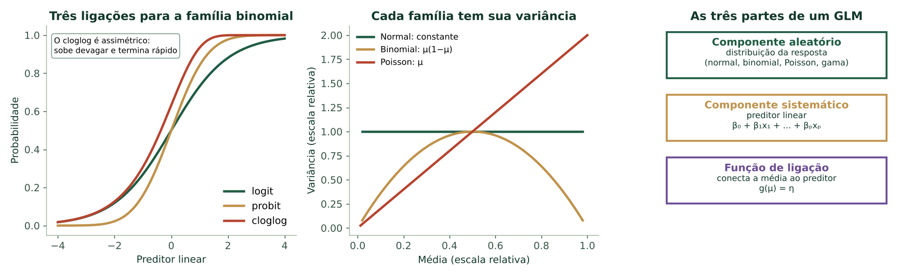
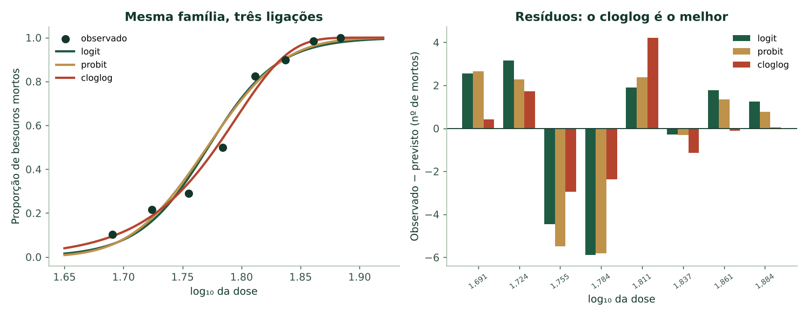

Modelos lineares generalizados (GLM)
Estrutura comum aos modelos de regressão: escolhe-se a distribuição da resposta e a função que a liga ao preditor linear.
Comece por aqui
Até aqui, cada tipo de resposta pediu um modelo diferente: regressão linear para medidas contínuas, logística para respostas binárias, Poisson para contagens. Os modelos lineares generalizados mostram que os três são o mesmo modelo, montado com peças diferentes. Entender essa estrutura comum economiza esforço e evita erros: a sintaxe, o diagnóstico e a lógica da inferência passam a ser os mesmos.
O artigo de Nelder e Wedderburn (1972) não propôs um modelo novo: mostrou que vários modelos já existentes eram casos particulares de uma mesma família, estimável por um único algoritmo. Essa unificação está por trás da função glm(), que atende a todos eles com a mesma sintaxe.
O que é o modelo
Um GLM tem três componentes. Trocando um deles, obtém-se um modelo diferente.

| Resposta | Família | Ligação canônica | Variância | Ficha |
|---|---|---|---|---|
| Contínua, simétrica | Normal (gaussiana) | identidade | constante | Regressão linear |
| Binária ou proporção | Binomial | logit | μ(1 − μ)/n | Regressão logística |
| Contagem | Poisson | log | μ | Regressão de Poisson |
| Contagem com superdispersão | Binomial negativa | log | μ + μ²/θ | Binomial negativa |
| Contínua positiva e assimétrica | Gama | inversa | μ² | — |
| Contínua positiva com zeros | Tweedie | log | μ^p | — |
Cada família tem uma ligação canônica, que simplifica a matemática, mas outras são permitidas. Para a binomial, logit é a canônica; probit e cloglog são alternativas legítimas, e às vezes melhores, como mostra o exemplo desta ficha.
Pressupostos e como verificá-los
| Pressuposto | Por que importa | Como verificar |
|---|---|---|
| Observações independentes | Condição dos erros-padrão. | Delineamento; para dados agrupados, use GEE ou modelos mistos. |
| Distribuição adequada à resposta | Define a função de variância. | Natureza da resposta; comparar variância observada e prevista. |
| Função de ligação correta | Uma ligação inadequada distorce todo o ajuste. | Comparar deviances e AIC de ligações alternativas; resíduos contra o preditor linear. |
| Preditor linear correto na escala da ligação | O efeito de x é linear em g(μ), não em μ. | Resíduos parciais; termos quadráticos ou splines. |
| Dispersão compatível com a família | Superdispersão invalida os erros-padrão. | Deviance ou qui-quadrado de Pearson dividido pelos graus de liberdade. |
| Ausência de observações muito influentes | Poucos pontos podem dominar o ajuste. | Distância de Cook e alavancagem. |
Hipóteses e estatística de teste
Em que:
- \(\mathcal F\)
- família da distribuição da resposta
- \(\mu_i\)
- média da resposta na observação i
- \(\eta_i\)
- preditor linear
- \(g\)
- função de ligação; \(g^{-1}\) devolve a média
- \(\phi\)
- parâmetro de dispersão (fixo em 1 na binomial e na Poisson)
- \(D\)
- deviance: duas vezes a diferença de log-verossimilhança em relação ao modelo saturado
- \(\mathbf W\)
- matriz de pesos da iteração, que depende da família e da ligação
- \(z_i\)
- variável de trabalho do algoritmo de mínimos quadrados ponderados iterativos
A última expressão é o algoritmo usado em todos os GLM: ajusta-se repetidamente uma regressão ponderada a uma variável transformada, até a convergência. É por isso que uma única função atende a todas as famílias.
Exemplo numérico, passo a passo
No exemplo desta ficha, o modelo com ligação cloglog tem \(b_0=-39{,}572\) e \(b_1=22{,}041\), com \(x=\log_{10}\) da dose.
Para \(x=1{,}7842\): \[\begin{aligned}\eta &= -39{,}572 \\ &\quad +22{,}041\times1{,}7842 \\ &= -0{,}2494.\end{aligned}\]
Ligação cloglog: \[\begin{aligned}\mu &= 1-\exp\!\left(-e^{\eta}\right) \\ &= 1-\exp(-0{,}7793) \\ &= 0{,}5414.\end{aligned}\]
Com 56 besouros expostos, isso corresponde a \(56\times0{,}5414=30{,}3\) mortos; observaram-se 28.
Dose letal 50%: resolve-se \(1-\exp(-e^{\eta})=0{,}5\), isto é, \(\eta=\ln(-\ln 0{,}5)=-0{,}3665\); logo \(x=(-0{,}3665+39{,}572)/22{,}041=1{,}7788\), ou \(10^{1{,}7788}=60{,}1\) mg/l.
Propriedades
- Os coeficientes são estimados por máxima verossimilhança, com o mesmo algoritmo para todas as famílias.
- A deviance generaliza a soma de quadrados residual: na família normal, as duas coincidem.
- Modelos encaixados são comparados pela diferença de deviances, que segue aproximadamente uma qui-quadrado.
- O AIC permite comparar modelos não encaixados da mesma família, inclusive com ligações diferentes.
- A escala em que o efeito é linear é a da ligação; na escala da resposta, o efeito não é constante.
- Resíduos de deviance e de Pearson substituem os resíduos comuns no diagnóstico.
Como interpretar os resultados
| Ligação | exp(b) ou b significa |
|---|---|
| identidade | Variação da média por unidade do preditor. |
| log | Fator multiplicativo da média: exp(b) é uma razão de taxas. |
| logit | exp(b) é uma razão de chances. |
| probit | Variação em desvios-padrão da variável latente normal. |
| cloglog | exp(b) é uma razão de riscos acumulados. |
| Elemento | Leitura |
|---|---|
| Deviance / graus de liberdade | Próximo de 1 indica ajuste compatível com a família. |
| Valor-p da deviance | Pequeno indica falta de ajuste (ligação, preditores ou dispersão). |
| AIC | Menor é melhor; compare modelos ajustados aos mesmos dados. |
| Resíduos de deviance | Devem ficar sem padrão quando plotados contra o preditor linear. |
Reporte a família, a ligação, os coeficientes com intervalos de confiança, a deviance com os graus de liberdade e o AIC.
Como executar no R e em Python
Onde executar o código em Python
Não é preciso instalar nada: o Google Colab é um computador na nuvem, gratuito, que executa Python pelo navegador e já traz as bibliotecas usadas aqui (numpy, scipy e matplotlib).
glm() pertence ao pacote stats, já instalado com o R. A família é escolhida em family=, e a ligação dentro dela, como em binomial(link = "cloglog"). Para resposta binomial agrupada, a resposta é uma matriz de duas colunas: cbind(sucessos, fracassos).
modelo <- glm(cbind(mortos, expostos - mortos) ~ ldose,
data = dados, family = binomial(link = "cloglog"))
summary(modelo)
O código Python desta ficha faz as contas passo a passo com numpy e scipy, para que cada resultado possa ser acompanhado. No dia a dia, a biblioteca statsmodels, também disponível no Google Colab, oferece esses modelos prontos.
Exemplo de aplicação
Contexto dos dados
Em um ensaio clássico de toxicologia (BLISS, 1935), grupos de besouros foram expostos a oito concentrações de dissulfeto de carbono, e registrou-se quantos morreram em cada grupo. A resposta é uma proporção baseada em um número conhecido de indivíduos: o caso típico da família binomial com dados agrupados. A pergunta é qual ligação descreve melhor a curva de dose-resposta.
Código em R
# Modelos lineares generalizados: exemplo completo ----
# Pacote: apenas o stats (já vem com o R).
# 1. Dados: besouros expostos a dissulfeto de carbono (Bliss, 1935)
dados <- data.frame(
ldose = c(1.6907, 1.7242, 1.7552, 1.7842, 1.8113, 1.8369, 1.8610, 1.8839),
expostos = c(59, 60, 62, 56, 63, 59, 62, 60),
mortos = c(6, 13, 18, 28, 52, 53, 61, 60))
dados$proporcao <- dados$mortos / dados$expostos
dados
# 2. Resposta binomial agrupada: cbind(sucessos, fracassos)
resposta <- cbind(dados$mortos, dados$expostos - dados$mortos)
# 3. A mesma família com três ligações diferentes
m_logit <- glm(resposta ~ ldose, data = dados, family = binomial(link = "logit"))
m_probit <- glm(resposta ~ ldose, data = dados, family = binomial(link = "probit"))
m_cloglog <- glm(resposta ~ ldose, data = dados, family = binomial(link = "cloglog"))
summary(m_logit)
summary(m_cloglog)
# 4. Comparação dos ajustes pela deviance e pelo AIC
sapply(list(logit = m_logit, probit = m_probit, cloglog = m_cloglog),
function(m) c(deviance = deviance(m), gl = df.residual(m), AIC = AIC(m)))
# 5. Teste de ajuste: a deviance segue aproximadamente uma qui-quadrado
pchisq(deviance(m_cloglog), df.residual(m_cloglog), lower.tail = FALSE)
# 6. Dose letal 50% (log10 e na escala original)
b <- coef(m_cloglog)
ld50 <- (log(-log(0.5)) - b[1]) / b[2]
c(log10_LD50 = ld50, LD50 = 10^ld50)
# 7. Outras famílias usam exatamente a mesma sintaxe
# glm(y ~ x, family = gaussian) # regressão linear
# glm(y ~ x, family = poisson) # contagens
# glm(y ~ x, family = Gamma(link = "log")) # resposta contínua positiva e assimétrica
# glm(cbind(s, f) ~ x, family = binomial) # proporções
# 8. Diagnóstico
par(mfrow = c(2, 2)); plot(m_cloglog); par(mfrow = c(1, 1))
# 9. Gráfico: as três curvas sobre os dados
plot(proporcao ~ ldose, data = dados, pch = 19, ylim = c(0, 1),
xlab = "log10 da dose", ylab = "Proporção de mortos")
grade <- data.frame(ldose = seq(1.65, 1.92, length.out = 200))
lines(grade$ldose, predict(m_logit, grade, type = "response"), col = "darkgreen", lwd = 2)
lines(grade$ldose, predict(m_probit, grade, type = "response"), col = "orange", lwd = 2)
lines(grade$ldose, predict(m_cloglog, grade, type = "response"), col = "red", lwd = 2)
legend("topleft", c("logit", "probit", "cloglog"),
col = c("darkgreen", "orange", "red"), lwd = 2, bty = "n")
A mesma análise em Python, com os resultados
Cole o código em um notebook do Google Colab ↗ e execute com Shift+Enter. Os valores abaixo são a saída desse código.
# Bibliotecas: numpy, scipy e matplotlib (já instaladas no Google Colab)
import numpy as np
from scipy import stats, optimize
import matplotlib.pyplot as plt
# Dados: besouros expostos a dissulfeto de carbono (Bliss, 1935)
# ldose = log10 da dose (mg/l) | expostos | mortos
ldose = np.array([1.6907, 1.7242, 1.7552, 1.7842, 1.8113, 1.8369, 1.8610, 1.8839])
expostos = np.array([59, 60, 62, 56, 63, 59, 62, 60.])
mortos = np.array([6, 13, 18, 28, 52, 53, 61, 60.])
X = np.column_stack([np.ones(8), ldose])
ligacoes = {
"logit": (lambda e: 1 / (1 + np.exp(-e)), lambda p: np.log(p / (1 - p))),
"probit": (lambda e: stats.norm.cdf(e), lambda p: stats.norm.ppf(p)),
"cloglog": (lambda e: 1 - np.exp(-np.exp(e)), lambda p: np.log(-np.log(1 - p))),
}
def hessiana(f, x, h=1e-5):
p = len(x); H = np.zeros((p, p))
for i in range(p):
for j in range(p):
e1 = np.zeros(p); e2 = np.zeros(p); e1[i] = h; e2[j] = h
H[i, j] = (f(x+e1+e2) - f(x+e1-e2) - f(x-e1+e2) + f(x-e1-e2)) / (4 * h * h)
return H
def glm_binomial(X, n, y, ligacao, nomes):
"""GLM com resposta binomial agrupada (y sucessos em n ensaios)."""
inversa = ligacoes[ligacao][0]
def menos_logv(b):
p = np.clip(inversa(X @ b), 1e-12, 1 - 1e-12)
return -np.sum(y * np.log(p) + (n - y) * np.log(1 - p))
res = optimize.minimize(menos_logv, np.array([-40.0, 22.0]), method="BFGS")
b = res.x; ep = np.sqrt(np.diag(np.linalg.inv(hessiana(menos_logv, b))))
z = b / ep; pv = 2 * stats.norm.sf(np.abs(z))
mu = n * inversa(X @ b)
termo1 = np.where(y > 0, y * np.log(np.where(y > 0, y, 1) / mu), 0.0)
termo2 = np.where(n - y > 0, (n - y) * np.log(np.where(n - y > 0, n - y, 1) / (n - mu)), 0.0)
dev = 2 * np.sum(termo1 + termo2)
print(f" {'Termo':<14}{'Estimativa':>11}{'Erro-padrão':>13}{'z':>9}{'p-valor':>11}")
for nm, bi, ei, zi, pi in zip(nomes, b, ep, z, pv):
print(f" {nm:<14}{bi:>11.4f}{ei:>13.4f}{zi:>9.3f}{pi:>11.2e}")
print(f" Deviance = {dev:.4f} em {len(y) - X.shape[1]} gl | p-valor do ajuste = {stats.chi2.sf(dev, len(y)-X.shape[1]):.4f}"
f" | AIC = {2*res.fun + 2*X.shape[1]:.2f}")
return dict(b=b, ep=ep, dev=dev, logv=-res.fun, mu=mu)
# 1. Dados observados
print("ldose expostos mortos proporção")
for a, b_, c in zip(ldose, expostos, mortos):
print(f"{a:.4f} {int(b_):>7} {int(c):>6} {c/b_:>9.3f}")
# 2. Três ligações para a mesma família (binomial)
modelos = {}
for lig in ["logit", "probit", "cloglog"]:
print(f"\nLigação {lig}:")
modelos[lig] = glm_binomial(X, expostos, mortos, lig, ["(Intercepto)", "ldose"])
# 3. Comparação dos ajustes
print("\nLigação Deviance AIC")
for lig, m in modelos.items():
print(f"{lig:<10}{m['dev']:>10.4f}{2*(-m['logv']) + 4:>9.2f}")
# 4. Dose letal 50% pela melhor ligação
for lig in ["logit", "cloglog"]:
b = modelos[lig]["b"]
alvo = ligacoes[lig][1](0.5)
ld50 = (alvo - b[0]) / b[1]
print(f"\n{lig}: dose letal 50% em log10 = {ld50:.4f} -> {10**ld50:.3f} mg/l")
# 5. Proporções previstas por cada ligação
print("\nldose observado logit probit cloglog")
for i in range(8):
linha = [modelos[l]["mu"][i] / expostos[i] for l in ["logit", "probit", "cloglog"]]
print(f"{ldose[i]:.4f} {mortos[i]/expostos[i]:>9.3f} {linha[0]:>7.3f} {linha[1]:>8.3f} {linha[2]:>8.3f}")
# 6. A mesma estrutura em outras famílias: três exemplos de ligação canônica
print("\nFamília Resposta Ligação canônica Variância")
print("Normal contínua identidade constante")
print("Binomial sucesso/fracasso logit mu(1-mu)/n")
print("Poisson contagem log mu")
print("Gama contínua positiva inversa mu²")
# 7. Gráficos
fig, ax = plt.subplots(1, 2, figsize=(11, 4))
grade = np.linspace(1.65, 1.92, 200); Xg = np.column_stack([np.ones(200), grade])
ax[0].scatter(ldose, mortos / expostos, s=40, zorder=3, label="observado")
for lig in ["logit", "probit", "cloglog"]:
ax[0].plot(grade, ligacoes[lig][0](Xg @ modelos[lig]["b"]), label=lig)
ax[0].set_xlabel("log10 da dose"); ax[0].set_ylabel("Proporção de mortos"); ax[0].legend()
for lig in ["logit", "probit", "cloglog"]:
ax[1].scatter(ldose, mortos - modelos[lig]["mu"], label=lig)
ax[1].axhline(0, color="black", lw=0.8)
ax[1].set_xlabel("log10 da dose"); ax[1].set_ylabel("Observado - previsto (nº de mortos)"); ax[1].legend()
plt.show()
Resultados da execução
ldose expostos mortos proporção 1.6907 59 6 0.102 1.7242 60 13 0.217 1.7552 62 18 0.290 1.7842 56 28 0.500 1.8113 63 52 0.825 1.8369 59 53 0.898 1.8610 62 61 0.984 1.8839 60 60 1.000 Ligação logit: Termo Estimativa Erro-padrão z p-valor (Intercepto) -60.7175 5.1695 -11.745 7.47e-32 ldose 34.2703 2.9059 11.794 4.21e-32 Deviance = 11.2322 em 6 gl | p-valor do ajuste = 0.0815 | AIC = 376.47 Ligação probit: Termo Estimativa Erro-padrão z p-valor (Intercepto) -34.9352 2.6376 -13.245 4.81e-40 ldose 19.7279 1.4830 13.303 2.22e-40 Deviance = 10.1198 em 6 gl | p-valor do ajuste = 0.1197 | AIC = 375.36 Ligação cloglog: Termo Estimativa Erro-padrão z p-valor (Intercepto) -39.5723 3.2279 -12.259 1.50e-34 ldose 22.0412 1.7925 12.297 9.46e-35 Deviance = 3.4464 em 6 gl | p-valor do ajuste = 0.7511 | AIC = 368.69 Ligação Deviance AIC logit 11.2322 376.47 probit 10.1198 375.36 cloglog 3.4464 368.69 logit: dose letal 50% em log10 = 1.7717 -> 59.118 mg/l cloglog: dose letal 50% em log10 = 1.7788 -> 60.083 mg/l ldose observado logit probit cloglog 1.6907 0.102 0.059 0.057 0.095 1.7242 0.217 0.164 0.179 0.188 1.7552 0.290 0.362 0.379 0.338 1.7842 0.500 0.605 0.604 0.542 1.8113 0.825 0.795 0.788 0.758 1.8369 0.898 0.903 0.904 0.918 1.8610 0.984 0.955 0.962 0.986 1.8839 1.000 0.979 0.987 0.999 Família Resposta Ligação canônica Variância Normal contínua identidade constante Binomial sucesso/fracasso logit mu(1-mu)/n Poisson contagem log mu Gama contínua positiva inversa mu²

| log₁₀ da dose | Expostos | Mortos | Proporção |
|---|---|---|---|
| 1,6907 | 59 | 6 | 0,102 |
| 1,7242 | 60 | 13 | 0,217 |
| 1,7552 | 62 | 18 | 0,290 |
| 1,7842 | 56 | 28 | 0,500 |
| 1,8113 | 63 | 52 | 0,825 |
| 1,8369 | 59 | 53 | 0,898 |
| 1,8610 | 62 | 61 | 0,984 |
| 1,8839 | 60 | 60 | 1,000 |
| Ligação | Intercepto (EP) | Inclinação (EP) | Deviance (6 g.l.) | Valor-p do ajuste | AIC |
|---|---|---|---|---|---|
| logit | −60,718 (5,170) | 34,270 (2,906) | 11,232 | 0,082 | 376,47 |
| probit | −34,935 (2,638) | 19,728 (1,483) | 10,120 | 0,120 | 375,36 |
| cloglog | −39,572 (3,228) | 22,041 (1,793) | 3,446 | 0,751 | 368,69 |
| log₁₀ da dose | Observado | logit | probit | cloglog |
|---|---|---|---|---|
| 1,6907 | 0,102 | 0,059 | 0,057 | 0,095 |
| 1,7552 | 0,290 | 0,362 | 0,379 | 0,338 |
| 1,7842 | 0,500 | 0,605 | 0,604 | 0,542 |
| 1,8610 | 0,984 | 0,955 | 0,962 | 0,986 |
Leitura: a ligação cloglog descreve esses dados bem melhor que as outras duas. Sua deviance é 3,45 em 6 graus de liberdade (valor-p de 0,751, compatível com um bom ajuste), contra 11,23 do logit (valor-p de 0,082, no limite). O AIC confirma: 368,7 contra 376,5. Olhando as proporções previstas, o problema do logit aparece nos extremos: na menor dose ele prevê 5,9% de mortalidade onde se observaram 10,2%, e na maior prevê 95,5% onde morreram todos.
O motivo é a forma da curva. Logit e probit são simétricas em torno de 50%; o cloglog é assimétrico, com subida lenta no início e aproximação rápida de 100% no final — exatamente o padrão de muitos ensaios de dose-resposta. Pela ligação escolhida, a dose letal 50% é estimada em 60,1 mg/l (contra 59,1 mg/l pelo logit). O exemplo mostra que a escolha da ligação não é um detalhe: ela muda o ajuste, as previsões e as quantidades derivadas delas.
Erros comuns
| Erro | Como evitar |
|---|---|
| Escolher a família pelo hábito, e não pela resposta | A família define a função de variância; parta da natureza do dado. |
| Usar sempre a ligação canônica | Compare alternativas pela deviance e pelo AIC. |
| Interpretar o coeficiente na escala da resposta | O efeito é linear na escala da ligação. |
| Ignorar a dispersão | Deviance muito acima dos graus de liberdade invalida os erros-padrão. |
| Comparar AIC de famílias diferentes sem cuidado | Só vale quando a verossimilhança se refere aos mesmos dados e à mesma escala. |
| Usar resíduos comuns no diagnóstico | Use resíduos de deviance ou de Pearson. |
| Dar resposta binomial agrupada como proporção sem informar o total | Use cbind(sucessos, fracassos) ou o argumento weights. |
Alternativas e fluxo de trabalho
| Procedimento | Quando preferir |
|---|---|
| Modelos aditivos generalizados | O efeito do preditor é suave mas não linear na escala da ligação. |
| Quase-verossimilhança | Só a relação média-variância é especificada, sem distribuição completa. |
| GEE / modelos mistos | Observações agrupadas ou repetidas. |
| Binomial negativa | Contagens com superdispersão. |
| Mínimos quadrados ponderados | Resposta contínua com variância conhecida e ligação identidade. |
Modelos bayesianos (brms, rstanarm) | Amostras pequenas, separação ou informação prévia relevante. |
- Classifique a resposta: contínua, binária, proporção, contagem, tempo.
- Escolha a família correspondente.
- Escolha a ligação e compare alternativas razoáveis.
- Ajuste e examine deviance, dispersão e resíduos.
- Interprete os coeficientes na escala correta.
Referências desta ficha
- NELDER, John A.; WEDDERBURN, Robert W. M. Generalized linear models. Journal of the Royal Statistical Society: Series A, v. 135, n. 3, p. 370-384, 1972.
- McCULLAGH, Peter; NELDER, John A. Generalized linear models. 2. ed. London: Chapman & Hall, 1989.
- DOBSON, Annette J.; BARNETT, Adrian G. An introduction to generalized linear models. 4. ed. Boca Raton: CRC Press, 2018.
- BLISS, Chester I. The calculation of the dosage-mortality curve. Annals of Applied Biology, v. 22, n. 1, p. 134-167, 1935. (Fonte dos dados do exemplo.)
- AGRESTI, Alan. Foundations of linear and generalized linear models. Hoboken: Wiley, 2015.
- WEDDERBURN, Robert W. M. Quasi-likelihood functions, generalized linear models, and the Gauss-Newton method. Biometrika, v. 61, n. 3, p. 439-447, 1974.
- COLLETT, David. Modelling binary data. 2. ed. Boca Raton: Chapman & Hall/CRC, 2003.
- R CORE TEAM. R: a language and environment for statistical computing. Vienna: R Foundation for Statistical Computing, 2026. Disponível em: https://www.r-project.org/. (Função
glm, pacotestats.) - POSIT TEAM. RStudio: integrated development environment for R. Boston: Posit Software, PBC. Disponível em: https://posit.co/download/rstudio-desktop/.
- VIRTANEN, Pauli et al. SciPy 1.0: fundamental algorithms for scientific computing in Python. Nature Methods, v. 17, p. 261-272, 2020. DOI: 10.1038/s41592-019-0686-2. (Funções do módulo
scipy.stats.) - HARRIS, Charles R. et al. Array programming with NumPy. Nature, v. 585, p. 357-362, 2020. DOI: 10.1038/s41586-020-2649-2.
- HUNTER, John D. Matplotlib: a 2D graphics environment. Computing in Science & Engineering, v. 9, n. 3, p. 90-95, 2007.
- GOOGLE. Google Colaboratory. Disponível em: https://colab.research.google.com/.
- As figuras desta ficha foram elaboradas pelo autor.

Prof. Dr. Cássius Henrique Xavier Oliveira
Professor · ICTIN/UFLA · Estatística, Confiabilidade e Ciência de Dados.
Conheça minha trajetória e projetos →